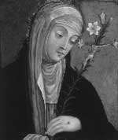

Catherine Benincasa (1347-1380), İtalya’nın Siena şehrinde dünyaya geldi. Doğduğu sırada şehir sancılı bir dönemden geçiyordu. Siena’da politik bir bölünme yaşanmıştı. Daha da kötüsü, Catherine bir yaşındayken İtalya’nın Toskana bölgesinde veba salgını başladı. Şehirde yaşayan binlerce insan bu hastalıktan etkilenerek hayatını kaybedecekti.

Ailesinin yirmi beş çocuğundan biri olan genç kız, on altı yaşına geldiğinde bir Dominiken olmaya karar verdi. Babasının evlenmesi yolundaki önerilerini geri çevirdi. O bir rahibe olacaktı. Bunun için üç yıl boyunca inzivaya çekildi. Nadiren penceresinden dışarı başını uzatıyordu. On dokuz yaşına gelince dini bir deneyim yaşadı. Yaşadığı bu deneyimi, “İsa Mesih’le mistik evlilik” olarak adlandıracaktı.
Çok geçmeden yeniden insanlarla ilişki kurmaya başladı. Bu arada şehirdeki koşullar kötüleşmişti. 1368 yılında babası hastalandı. Onunla ilgilenmek için yanına gitti. Kısa süre içerisinde babası hayatını kaybetti. Aynı yıl yaşanan bir devrim sırasında Siena’nın yöneticileri devrildiler.
Catherine, Siena ve İtalya genelinde yaşanan kargaşa sırasında dini meseleler ve İtalya politikası ile ilgili yazmaya başladı. Gerçekten de bu iki konu, o dönemde birbirinden ayrı ele alınamazdı. Ailesine, Papa’ya, keşişlere ve krallara yazdığı yüzlerce mektup, bu adanmış Katoliğin aynı zamanda keskin bir politik içgüdüye sahip olduğunu da gösteriyordu. Uzunca bir süre Papa 11. Gregory’i (1336-1378) Fransa’daki Avignon’dan ayrılıp, Roma Kilisesi’ne dönmesi için ikna etmeye çalıştı. 1305 yılında yaşanan politik bir tartışma sonucunda kardinaller Roma’yı terk etmişti. Catherine’in 1376 yılında Avignon’a gitmesi ve yaptığı lobi faaliyetleri, 1377 yılında Papanın Roma’ya dönmesinde büyük rol oynayacaktı.
Gregory’nin Roma’ya dönüşü Fransızlar’ı öfkelendirdi ve Batı’daki dini çatışmanın hızlanmasına neden oldu. Bu dönemde 15. yy’a kadar sürecek olan Katolikler arası bölünme derinleşmeye başladı. 1379 yılında bir grup kardinal tarafından alternatif bir papa, “antipapa” seçildi. Yaşanan bölünmeden endişe duyan Catherine barışın sağlanması için lobi faaliyetine devam etti. Otuz üç yaşındayken Roma’da öldü.
Ek Bilgiler
1- Catherine 11. Gregory’e yazdığı mektuplarda ona “babbo” (İtalyanca baba) demektedir.
2- 1461 yılında Catherine azize ilan edildi. Hemşirelerin, itfaiyecilerin, hasta ve muhtaç kişilerin ve ABD’nin Pennsylvania eyaletindeki Allentown’un koruyucu azizesi oldu. 1999 yılında Avrupa’nın da koruyucu aziesi ilan edildi.
3- Yazdığı mektuplar İtalyan yazınında önemli bir yere sahip olsa da Catherine ölümünden üç yıl öncesine kadar okuma-yazma bilmiyordu. Bu nedenle mektuplarının çoğunu katiplere yazdırmıştır.